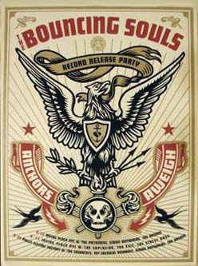

The Bouncing Souls
From The Giant: The Definitive Obey Giant Site
 |
 |
{kind=link}
In 2001, Shepard Fairey produced a promotional poster for the How I Spent my Summer Vacation record release parties. This poster was based on the graphic used in Ministry of Information. Later, in 2003, Shepard Fairey issued a promotional poster for The Bouncing Souls' album Anchors Aweigh. The graphic used is a variation of Lesser Gods Eagle. It has been reported that this poster was neither signed nor numbered.
From Yahoo Music:
The Bouncing Souls started out in 1987 with the intention of playing loud fast three-chord party music around their native New Jersey; besides, it gave them something to do while they were in high school. Upon graduation and after years of struggling to find a label to release their records, friends Greg Attonito (vocals), Pete Steinkopf (guitar), Bryan Kienlen (bass), and Shal Khichi (drums) got some money together and -- in true D.I.Y. fashion -- formed Chunksaah Records in 1993. Upon the formation of their own label, two EPs were to follow, entitled Argyle and Neurotic, before they released their first full-length, The Good, the Bad & the Argyle, in 1994.
Considerable touring and partying were to follow before the band struck a deal with BYO Records in 1995. Not only did they re-release their debut album along with their follow-up, Maniacal Laughter, but they were also starting to make a name for themselves by opening for NOFX, the Mighty Mighty Bosstones, 7 Seconds, and the Descendents, among other big names. Their style of singalong, hard-hitting, and passionate pop-punk caught the ears of Epitaph Records in 1997. In that same year, their self-titled third album was released, which not only called attention to the Bouncing Souls around the world, but also enabled them to leave their full-time jobs for a while. The live EP Tie One On held fans over in 1998 before their fourth album, Hopeless Romantic, was released in 1999.
Khichi left the band in 2000, and Michael McDermott replaced him soon after on drums. How I Spent My Summer Vacation appeared in spring 2001. Two years later, the band assembled its most honest material to date for the release of Anchors Aweigh. That same year, the band also put together and released the double-disc Do You Remember? 15 Years of the Bouncing Souls, which comprehensively documented the guys from their humble D.I.Y. roots through to the early 2000s. Another DVD, a live one, came out in September 2005 on Kung Fu, and a live two-disc album followed two months later on Chunksaah. The Bouncing Souls' next proper studio effort, The Gold Record, appeared in June 2006; in celebration, the Souls played a string of six soldout shows at N.Y.C.'s The Knitting Factory leading up to its release. The band then spent the entire summer on Warped's main stage. ~ Mike DaRonco, All Music Guide
Written by Mike DaRonco